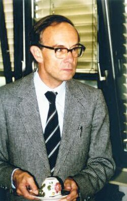

Friedrich Hirzebruch | |
|---|---|
 Hirzebruch in 1980 (picture courtesy MFO) | |
| Born | Friedrich Ernst Peter Hirzebruch 17 October 1927 Hamm, Province of Westphalia, Germany |
| Died | 27 May 2012 (aged 84) Bonn, Germany |
| Alma mater | |
| Known for | |
| Awards |
|
| Scientific career | |
| Fields | Mathematics |
| Institutions | |
Doctoral students | |
Friedrich Ernst Peter Hirzebruch ForMemRS[1] (17 October 1927 – 27 May 2012) was a German mathematician, working in the fields of topology, complex manifolds and algebraic geometry, and a leading figure in his generation. He has been described as "the most important mathematician in Germany of the postwar period."[3][4][5][6][7][8][9][10][11]
Hirzebruch was born in Hamm, Westphalia in 1927.[12] His father, of the same name, was a maths teacher.
In March 1945, Hirzebruch became a soldier, and in April, in the last weeks of Hitler's rule, he was taken prisoner by the British forces then invading Germany from the west. When a British soldier found that he was studying mathematics, he drove him home, released him, and told him to continue studying.[13] Hirzebruch studied at the University of Münster from 1945 to 1950, with one year at ETH Zürich.
Hirzebruch then held a position at Erlangen, followed by the years 1952–54 at the Institute for Advanced Study in Princeton, New Jersey. After one year at Princeton University 1955–56, he was made a professor at the University of Bonn, where he remained, becoming director of the Max-Planck-Institut für Mathematik in 1981. More than 300 people gathered in celebration of his 80th birthday in Bonn in 2007.
The Hirzebruch–Riemann–Roch theorem (1954) for complex manifolds was a major advance and quickly became part of the mainstream developments around the classical Riemann–Roch theorem; it was also a precursor of the Atiyah–Singer index theorem and Grothendieck's powerful generalisation. Hirzebruch's book Neue topologische Methoden in der algebraischen Geometrie (1956) was a basic text for the 'new methods' of sheaf theory, in complex algebraic geometry. He went on to write the foundational papers on topological K-theory with Michael Atiyah, and collaborated with Armand Borel on the theory of characteristic classes. In his later work, he provided a detailed theory of Hilbert modular surfaces, with Don Zagier. He even found connections between the Dedekind sum in number theory and differential topology, one of the many discoveries found between these different fields. His work influenced a generation of prominent mathematicians like Kunihiko Kodaira, John Milnor, Borel, Atiyah, Raoul Bott and Jean-Pierre Serre.
Hirzebruch is famous for organizing the Mathematische Arbeitstagung ("working meetings" in German) in Bonn University, beginning in 1957, and the first speakers include Atiyah, Jacques Tits, Alexander Grothendieck, Hans Grauert, Nicolaas Kuiper, and Hirzebruch himself. It allowed international cooperation in the mathematical world for the last 60 years and was a major source of developments in topology, geometry, group theory, number theory as well as mathematical physics in a few decades' time. He also established the Max Planck Institute for Mathematics at Bonn in 1980. The institute became the place for the Arbeitstagung and Hirzebruch was its director until 1995. The second Arbeitstagung began in 1993 and continues to this day.
From 1970 to 1971 he was the Donegall Lecturer in Mathematics at Trinity College Dublin.
According to the Mathematics Genealogy Project, Hirzebruch has supervised the doctoral studies of 52 mathematicians. Some of them include Egbert Brieskorn, Matthias Kreck, Don Zagier, Detlef Gromoll, Klaus Jänich, Lothar Göttsche, Dietmar Arlt, Winfried Scharlau, Walter Neumann, Wolfgang Meyer, Kang Zuo, Hans Scheerer, Erich Ossa, Klaus Lamotke, Eduardo Mendoza, Dimitrios Dais and Friedhelm Waldhausen.
Hirzebruch died at the age of 84 on 27 May 2012.[14][15][16]
Amongst many other honours, Hirzebruch was awarded the Wolf Prize in Mathematics in 1988 and a Lobachevsky Medal in 1989.[17]
The government of Japan awarded him the Order of the Sacred Treasure in 1996 and the Seki-Takakazu prize of the Mathematical Society of Japan (MSJ) in 1997.[18]
Hirzebruch won an Einstein Medal of the Albert Einstein Society in Bern in 1999, and received the Cantor medal in 2004.
Hirzebruch was a foreign member of numerous academies and societies, including the United States National Academy of Sciences, the Russian Academy of Sciences, the Royal Society[1] and the French Academy of Sciences. In 1980–81 he delivered the first Sackler Distinguished Lecture in Israel. He was also a member of academies of Russia, Poland, Ukraine, Israel, Finland, Hungary, Netherlands, Göttingen, Austria, and Ireland as well as the Academia Europaea and the European Academy of Arts and Sciences.
Hirzebruch was the president of the German Mathematical Society in 1962 and 1990, first after the foundation of a separate Eastern German mathematical due to the German division, and then again after the collapse of the wall which led to the unification of the East and West German Mathematical societies. He was also the first President of the European Mathematical Society from 1990 to 1994. In this way, he rebuilt the mathematical life in both Germany and Europe after the war.
{kind=link}